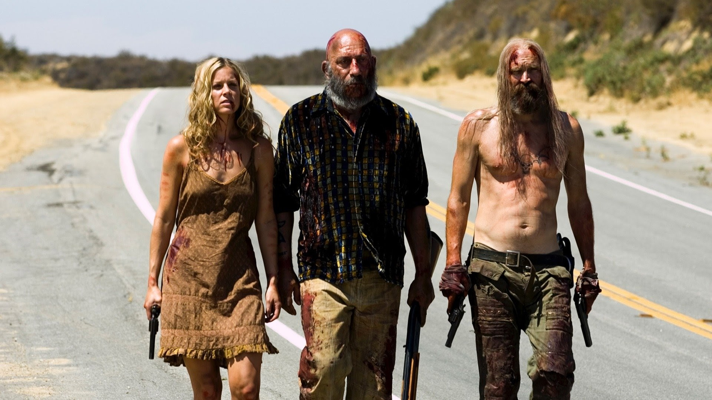

💀 Condenada
The Devil's Rejects (2005)
Años 70, asesinos en serie, slasher
3.5/5
La maldad no se esconde... viaja por carretera y deja un rastro de sangre.
Las obras maestras del miedo. Las que dejaron cicatrices en la historia del cine.
Años 70, asesinos en serie, slasher
3.5/5
La maldad no se esconde... viaja por carretera y deja un rastro de sangre.
Thriller, sobrenatural, monstruos
3/5
Un inquietante libro infantil despierta algo... y el terror comienza a susurrar su nombre.
Intriga, drama, sobrenatural
4.5/5
Un niño con un secreto escalofriante... y un final que jamás olvidarás.
 🔥 Maldita
🔥 Maldita
Posesiones, exorcismos, religión
4.5/5
La posesión más aterradora del cine... y la lucha de fe que cambió el terror para siempre.
Intriga, thriller, asesinos en serie
4.5/5
Un motel solitario, una noche de lluvia... y un secreto que corta el aliento.
Slasher, gore, payasos
2.5/5
Una noche de Halloween... y un payaso sediento de sangre que no conoce el miedo.
Sobrenatural, fantasmas
1.5/5
Un juego inocente se convierte en una puerta abierta al más allá.
Zombis, metraje encontrado, bomberos
3.5/5
Una noche de grabación rutinaria... hasta que el horror queda atrapado dentro del edificio.
Slasher, surrealismo, película de culto
3.5/5
Cuando cierras los ojos para dormir... él convierte tus sueños en una pesadilla real.
Slasher, asesinos en serie, muñecos
3/5
Creían haberlo dejado atrás... pero el juego mortal vuelve a comenzar.
Slasher, asesinos en serie, muñecos
3/5
Un muñeco aparentemente inofensivo... hasta que el terror empieza a moverse por sí solo.